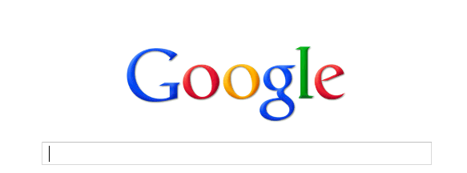

def setUp(self): keyDown(Key.CTRL + Key.SHIFT + Key.ESC) keyUp() type(Key.ALT + "f" + "n") wait(2) type ("firefox") type (Key.ENTER) if exists(): print ("it's fucking there") else: print ("shit's not there") def tearDown(self): keyDown(Key.ALT + Key.F4) keyUp() untilNotExist() def testA(self): assert exists win == 1 def testB(self): assert not exists win ==0